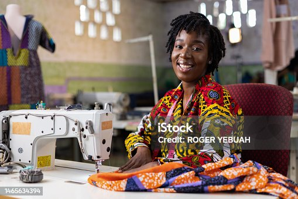
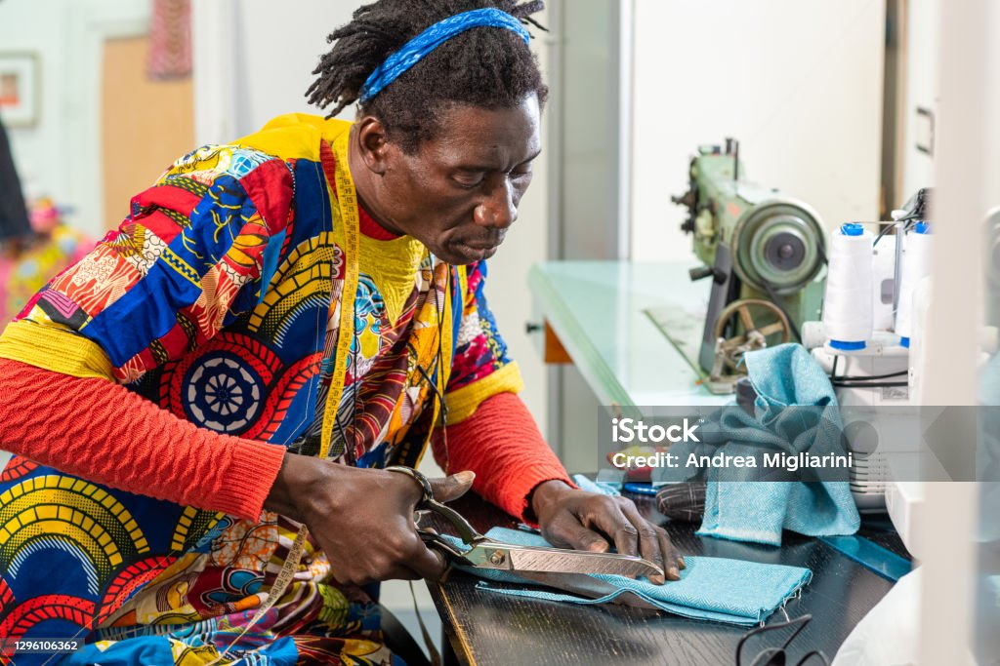
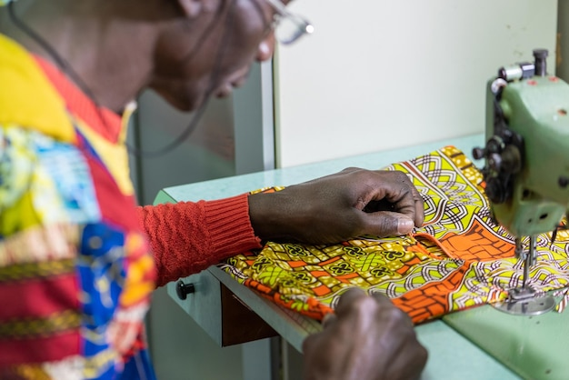

Savoir-faire
Des tailleurs formés aux techniques classiques, pour des retouches et des créations sur-mesure fidèles à la tradition.
Depuis 2011
REUFS&ARTS a ouvert ses portes en 2011, dans un ancien atelier de tailleur du 70ᵉ arrondissement du Bénin.Notre fondateur, formé aux techniques de la coupe classique, souhaitait proposer aux hommes des vêtements pensés pour durer, loin des collections jetables.
Au fil des années, la boutique s'est enrichie d'une sélection de parfums de niche, puis d'une ligne de pantalons et de costumes confectionnés en petites séries. Aujourd'hui, chaque pièce qui porte notre nom passe encore entre les mains de nos tailleurs avant de rejoindre nos rayons.

Notre mission
Trois principes guident chacun de nos choix, du fournisseur de tissu jusqu'à l'accueil en boutique.
Des tailleurs formés aux techniques classiques, pour des retouches et des créations sur-mesure fidèles à la tradition.
Chaque fournisseur — tisserand, parfumeur, tannerie — est choisi pour la qualité de sa matière avant tout critère de prix.
Un conseil individuel, en boutique ou sur rendez-vous, pour trouver la coupe et le parfum qui vous ressemblent.
L'équipe
Une petite équipe, présente en boutique, qui suit votre projet du premier essayage à la livraison.

Maître tailleur & fondateur
Conseillère parfums

Responsable retouches
Notre équipe se tient à votre disposition en boutique ou par téléphone.